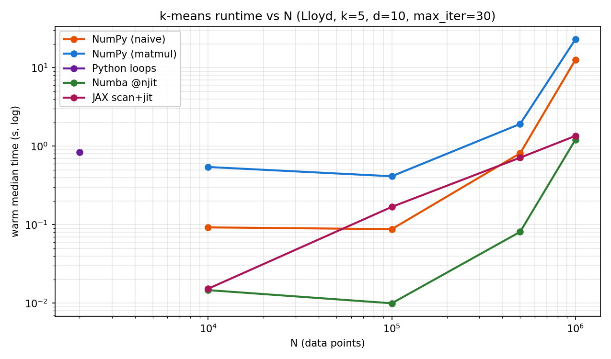
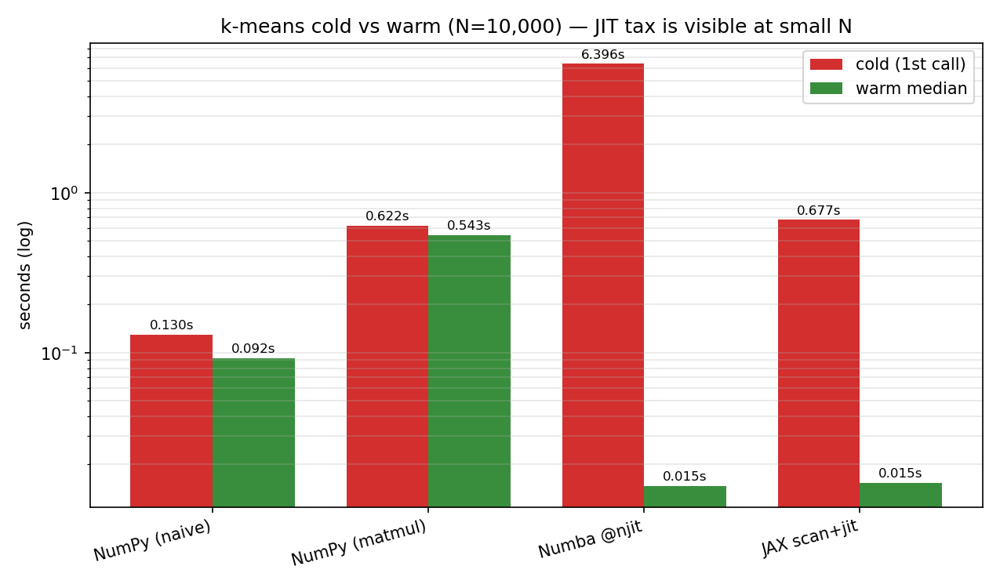
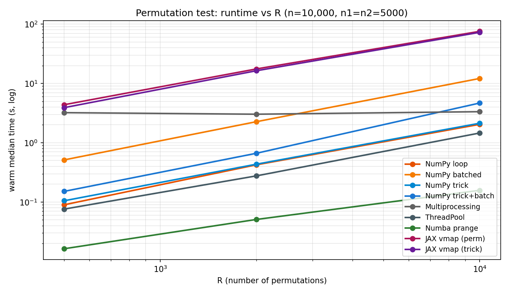
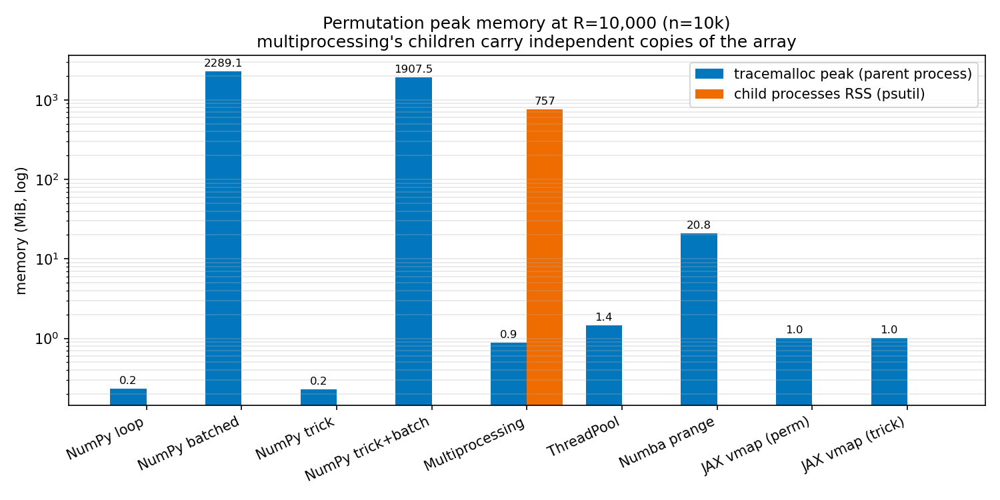
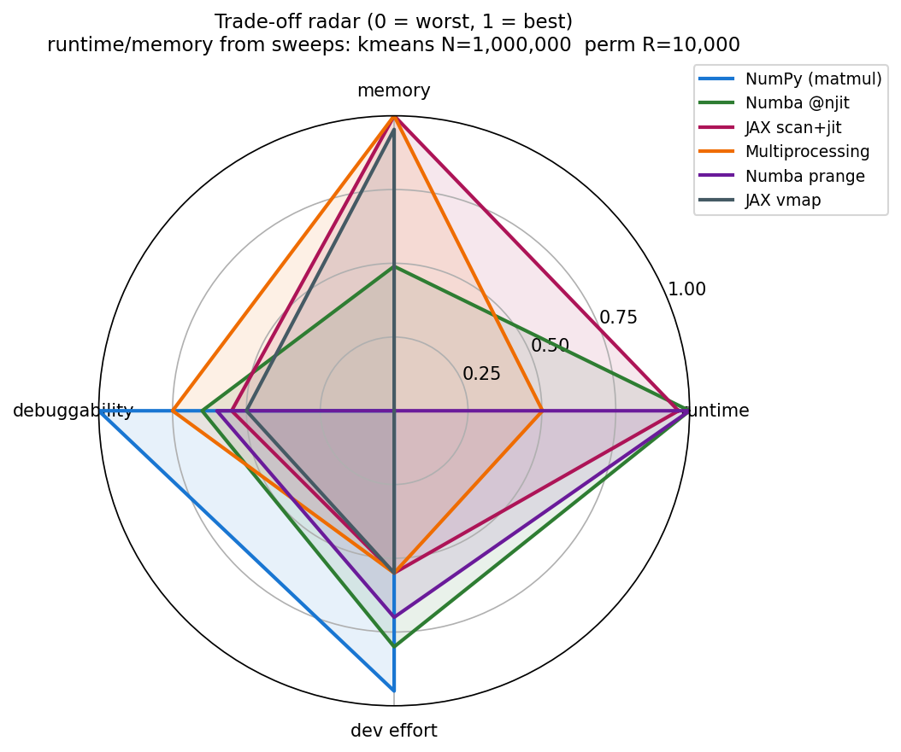

Wenxin Jiang & Jian Yin
PyCon US 2026 · 30 min · Room 104AB
Python 3.14 adds free-threaded and experimental JIT—plus mature Numba and JAX.
| Axis | Question |
|---|---|
| Runtime | How does it scale with data size? |
| Memory | Copies vs one shared array (especially parallel code) |
| Debuggability | When numerics go wrong, how painful is it? |
| Developer effort | How far from plain NumPy? |
Toy sizes for demos; larger N for “server-scale” stories.
experiments/results/v2/*.csv — warm median, each impl in a fresh subprocess.jax.block_until_ready — see docs/06-benchmarking-methodology.md.Code in this repo: experiments/kmeans/
Broadcasting / einsum for squared distances; argmin for labels; mean for updates.
experiments/kmeans/kmeans_numpy.pyHot path is already in C—so CPython JIT usually does not change this much.
@njitCompile inner assignment + centroid updates; stay in nopython mode.
experiments/kmeans/kmeans_numba.pyDeliberately slow loop-heavy variant: kmeans_loops.py
Example (this machine, N=4000): median ≈ 0.95 s per run
(kmeans_loops_small.csv).
On a JIT-enabled 3.14 build, compare the same code with JIT on/off—expect speedups on the Python loops, not on the NumPy-heavy baseline.
scan + jitFunctional style: carry centroids through jax.lax.scan; one-hot update step.
experiments/kmeans/kmeans_jax.pyFair timing on JAX requires jax.block_until_ready (async dispatch).
Setup: d=10, k=5, max_iter=30,
same initial centroids across all impls · Apple Silicon 8 core,
Python 3.11.6, NumPy 1.24, Numba 0.57, JAX 0.4 (CPU).
| N | NumPy naive | NumPy matmul | Numba | JAX scan+jit | Numba vs naive |
|---|---|---|---|---|---|
| 10,000 | 0.092 s | 0.543 s | 0.015 s | 0.015 s | 6.3× |
| 100,000 | 0.088 s | 0.414 s | 0.010 s | 0.169 s | 8.8× |
| 500,000 | 0.813 s | 1.92 s | 0.081 s | 0.715 s | 10.0× |
| 1,000,000 | 12.6 s | 23.0 s | 1.21 s | 1.35 s | 10.4× |
Source: experiments/results/v2/kmeans_sweep.csv.
All impls agree on inertia to < 1 ULP at identical init. JAX includes block_until_ready.

File: experiments/results/v2/kmeans_scaling.png · Python loops (purple dot at N=2k) is 0.84 s — plotted on the same axes to show the gulf versus the vectorised paths.

Numba 1st call 6.4 s (LLVM compile) vs 0.015 s warm · JAX 1st call 0.68 s vs 0.015 s warm.
x (length n), split index n1.R times → empirical null distribution.Implementations: experiments/permutation_test/
Observe that sum(x) is constant:
stat = S1/n1 − (S − S1)/n2 # S = sum(x) (fixed)
= S1 × (1/n1 + 1/n2) − S/n2
So the statistic depends only on the subset sum S1. We can replace a full rng.permutation(n) with rng.choice(n, n1, replace=False) — "pick which n1 indices go to group A".
Caveat we measured: in plain NumPy, rng.choice(..., replace=False) is implemented via permutation, so the naive trick buys nothing — but the batched form (argpartition) turns the idea into a real 2.6× speedup.
multiprocessingProcesses get separate address spaces → pickle / copy costs for large arrays.
Our driver chunks work across a ProcessPoolExecutor with an initializer (permtest_multiprocessing.py).
ThreadPoolExecutor shares in-process arrays—no full duplication by default.
Most compelling on a nogil / free-threaded 3.14 build for CPU-bound threads. Watch refcount / contention—sometimes threads lose to processes.
experiments/permutation_test/permtest_freethreaded.pyparallel=True + prangeOne process, shared read-only data, independent permutation work per iteration.
experiments/permutation_test/permtest_numba.pyvmap + jitVectorize over permutation seeds; explicit PRNG keys.
experiments/permutation_test/permtest_jax.pyLarge n + large R on CPU can be slow—often better on GPU or with batching.
Setup: n=10,000 (n1=n2=5000), R=10,000, same RNG seed ·
Apple Silicon 8 cores, Python 3.11.6 GIL build · each impl runs in a fresh subprocess
| Implementation | Warm (s) | vs naive | Peak memory |
|---|---|---|---|
| NumPy naive loop | 2.04 | 1.0× | 0.2 MiB (parent) |
| NumPy trick (subset-sum) | 2.13 | 0.96× | 0.2 MiB |
| NumPy trick + batched | 4.67 | 0.44× | 1 907 MiB ⚠︎ |
| ThreadPool (GIL build) | 1.46 | 1.4× | 1.4 MiB |
multiprocessing (8) |
3.34 | 0.6× | 0.9 MiB parent + 757 MiB children |
Numba prange |
0.158 | 13.0× | 20.8 MiB |
JAX vmap (CPU) |
75.5 | 0.03× | 1.0 MiB (XLA hidden) |
Source: experiments/results/v2/perm_sweep.csv · children RSS is a psutil probe during the run.


Left: multiprocessing's flat ~3 s floor is pure process-startup cost. Right: the two orange bars (batched NumPy, ~2 GiB) and the 757 MiB children RSS are the memory story of "copies vs shared".
prange: one process, one copy, 13× over naive NumPy — the single best ROI on CPU.multiprocessing pays a ~3 s startup and holds ~100 MiB per worker — mind copies on big arrays.vmap on CPU: honest anti-pattern for this kernel; reserve for accelerators.
Runtime & memory axes are log-scored from the sweep CSVs; debuggability & effort are our speaker-assigned judgement after porting real statistical code.
| Small Numba refactor fixes hot loops | Often the best ROI on CPU numerical code. |
| CPython 3.14 JIT | Low-effort speedups for Python-heavy glue; not a substitute for vectorized NumPy. |
| Free-threaded 3.14 | Consider when threads + shared big arrays beat multiprocessing copies. |
| JAX | When functional style + XLA/GPU/TPU batching matches your workload. |
docs/ — PEPs, Numba/JAX notes, benchmarking methodologyexperiments/ — reproducible scripts + experiments/results/docs/07-related-talks-and-references.md — PyCon talks & linksSlides: slides/index.html · Reveal.js: press S for speaker view